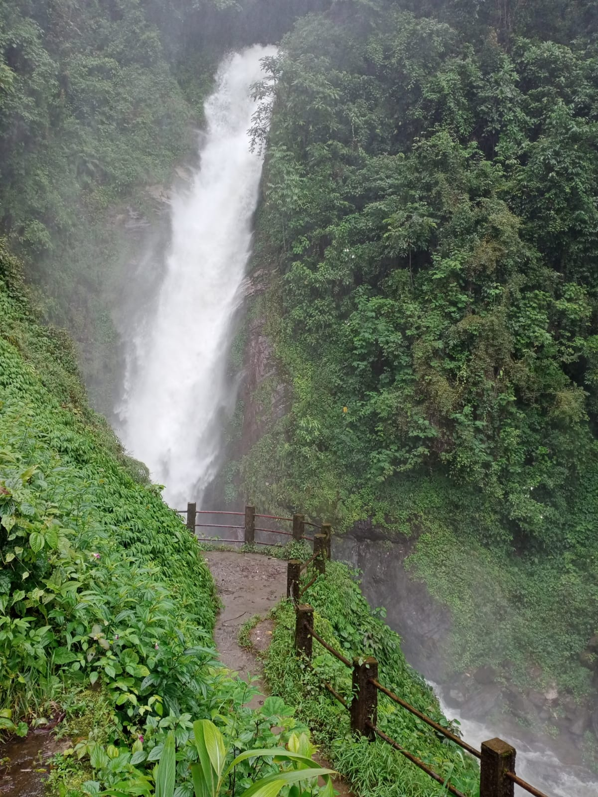
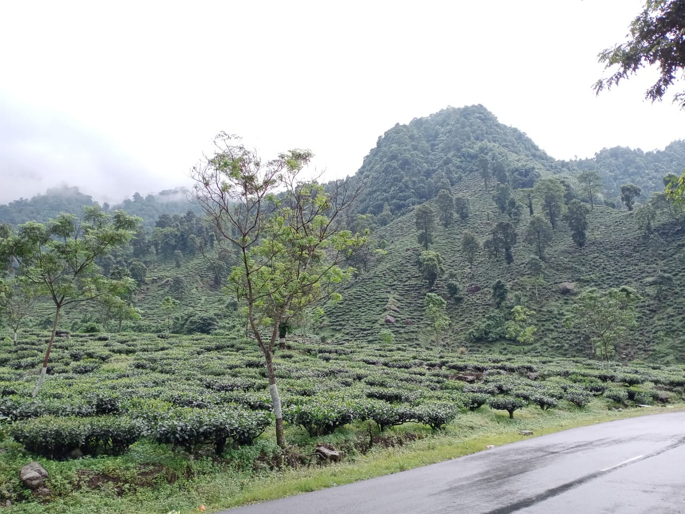

North Bengal (Himalayas)
My first experience of the view of Teesta River from the Himalayas. It was looking like a blue-white shining thread. I can watch the marvellous scenery for hours. Sitting by the window of a car, there is not a single sight to miss. Each having some different charm. The roads, the trees, the small beautifully designed isolated homes, the clouds, the tea plantations, pines, waterfalls, rivers, bridges (not like the typical city bridges), the momos, the food and the creepy blood-sucking leeches (well this creatures mostly come for your tasty blood in the rainy season). Well, omit the leeches part, its there home, we are aliens there.
We trekked down from the top of the falls to the bottom in rainy season. The path was slippery and shrubs closing in the path and offcourse with the cute little thread-like colourful creatures, waiting for their red-red food. Well I think winter would be best to trek. Also the waterfall becomes furious and water after falling jumps up such heights as if it rains and anyway enough to wet you. We had to use umbrellas but yet got wet.
I am in love with the mountains. These are always my first choice of travel and doing some adventures. Close to the cloud and sometimes above it. White and green carpeted mountains, and snake-like roads on it. More height we gain, more and more exciting it feels and more fabulous the views from that height. Fresh air and above all the view from the top. Marvellous isn't it? That is something you want after climbing a mountain.
Each season has a different look on the mountains. Summers on mountains are with pleasant weather, lesser greenery, lesser fog, lesser rain (“whisper: lesser leaches”). Rainy season dress up the mountains differently. More shrubs grow and cover the mountains with light to deep green. Pine forests in the rainy season, well it is where the actual inner beauty is located. Foggy, wet and green with dark barks, chanting spells on our minds to stay in the woods, forever. Another place where I love to visit in the mountains are Waterfalls, which become very dangerous in the rainy season. However, in the winter and summer, a must seen sight. I love the view of tea-gardens on both side of the roads and on small hills on the mountains.
At night, the view of small lights in the towns, visible from the mountains, yet another addiction to the eyes. Well, reading not looks much exciting but believe me the adventures, treks, sounds and sights are what will blow your mind and chant spells on you.